2017 JS 과제 회고 (작성 : UI개발2팀 안혜원)
1. jQuery ,Javascript Selector
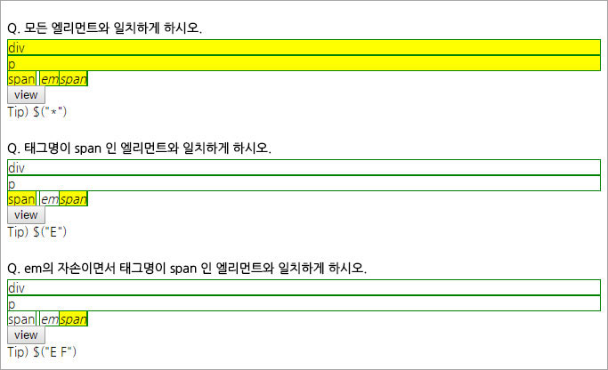
- Sub
- Javascript와 jQuery의 선택자 차이점 비교하기
- 각 선택자 사용 방법 및 이슈 체크
2. 비교조건문 (if문)
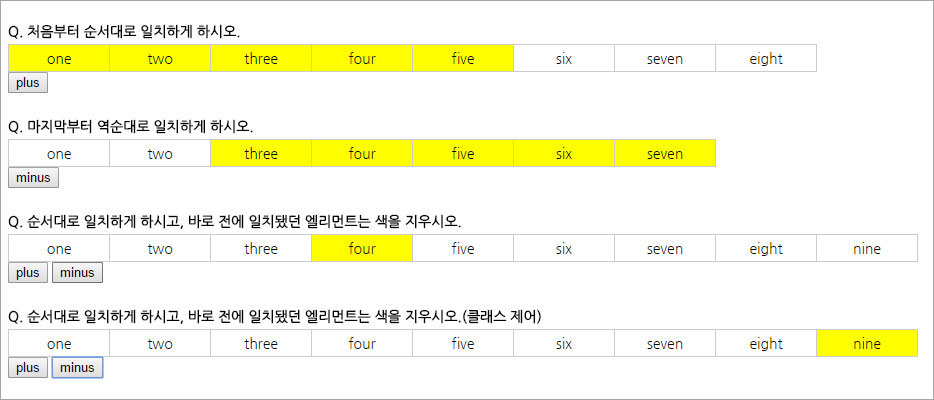
- Sub
- 각 특성의 버튼 클릭 시 배경색이 순차변경됨
- 각 요소의 전체 갯수를 체크하고, 처음/마지막 요소일 때 조건문 추가
- 활성화/초기화는 각 요소의 index를 체크하여 제어한다.
- Point
- index의 증감이 일어나는 구문 순서에 유의한다.
- 확장성을 고려하여 로드 시 전체 요소의 갯수를 체크하여 유동적으로 대응(length 체크)
- index를 변수로 저장 시 지역변수로 저장되었는지 확인한다.
3. 반복문
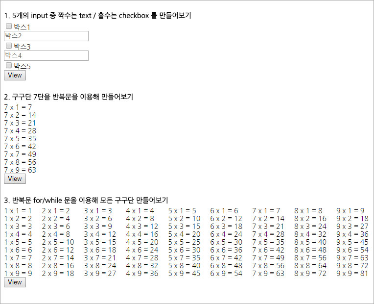
- Sub
- 반복문을 사용하여 조건을 만족할 때까지 구문 실행 (while/for문)
- Point
- 반복문이 실행되어야 하는 범위를 잘 체크한다
- 태그 삽입 방법(Array.push() / Array +=)
- Array.join() : 배열의 모든 원소를 문자열로 변환하고, 이어붙여서 반환한다. [▶Method]
- Tip
- for문의 조건 실행 시, 요소의 length를 체크한 값을 변수에 저장해두면 최초 실행 후 종료되는 구문이므로 성능최적화가 된다.
4. 객체지향함수
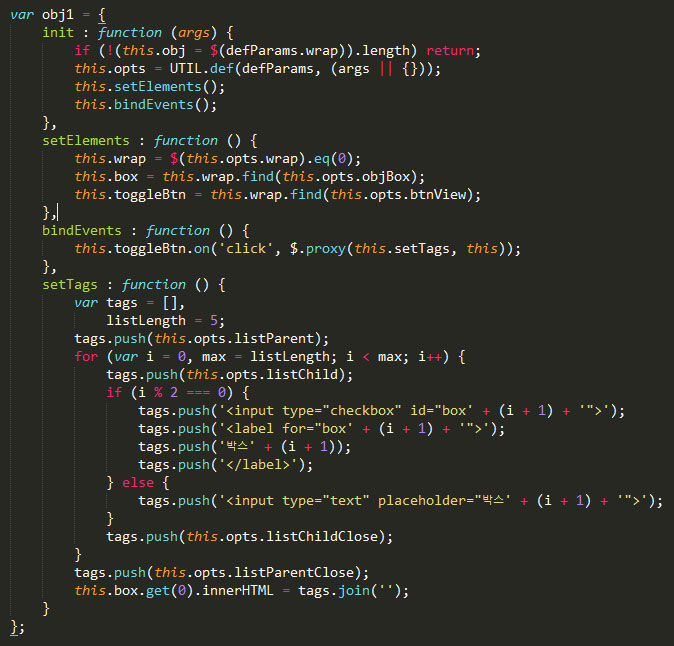
- Sub
- 기존 수행한 과제를 객체지향프로그래밍으로 재작성
- Point
- 각 역할에 맞는 요소를 분리하여 가독성 및 사용성 최대화
- jQuery.proxy : this가 가리키는 대상이 동일하도록 처리하는 메서드 사용 [▶API]
5. layer popup
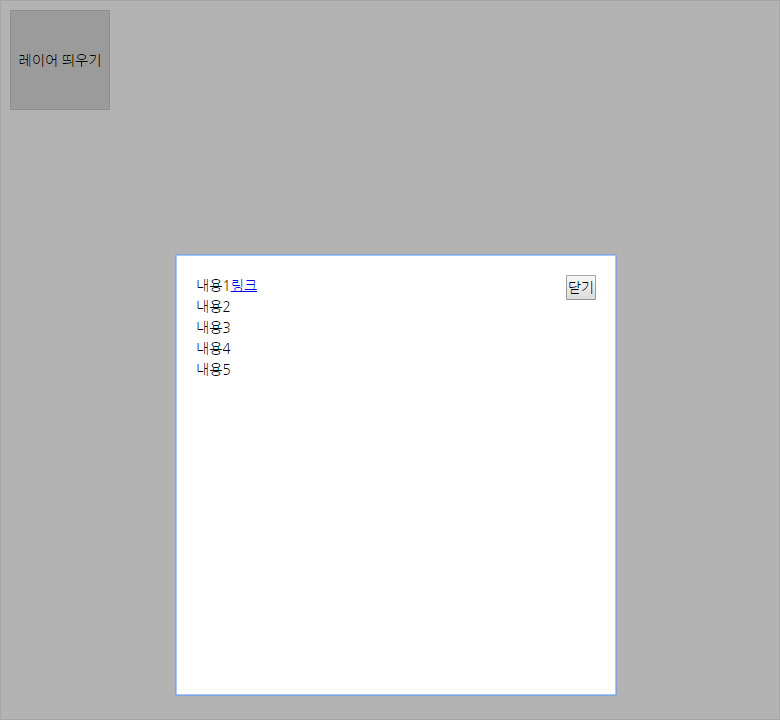
- Sub
- 버튼 클릭 시 팝업이 뜨고, 닫기버튼/딤드영역 클릭 시 레이어 닫힘
- 레이어 팝업 시 tabindex 속성을 사용하여 포커스를 강제로 이동
- 레이어가 팝업되면 clickoutside가 on되고, 닫히면 off됨
- 팝업 상태에서 탭할 경우, 해당 레이어 내에서만 포커스가 돌아야 함(shift/unshift)
- Point
- 레이어 팝업의 앞/뒤에 빈 태그를 추가하고 tabindex 속성을 주어 포커스가 레이어 팝업 내에서 돌 수 있도록 한다.
- 구현
- 방법1 : 팝업 태그의 앞/뒤에 tabindex 속성을 가진 빈 태그 추가
- 방법2 : keydown keyup 이벤트를 추가하고, key code값을 받아와 각 type별로 실행한다. (일부 브라우저는 keyCode로, 일부 다른 브라우저는 which로 인식하므로 모두 조건 구문에 추가한다.)
- Tip
- outside 이벤트가 계속해서 실행되지 않도록 각 구문에 별도로 on/off를 선언해주어야 한다.
6. 배열
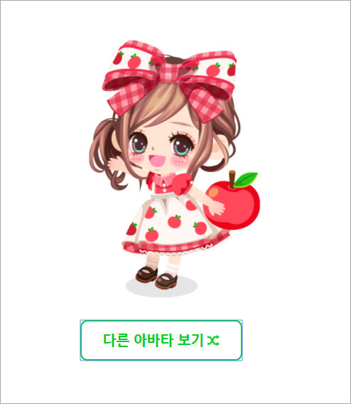
- Sub
- 페이지 로딩 시, 버튼 클릭 시 해당 배열 갯수만큼 랜덤 노출
- 아바타의 index를 배열로 저장하고 랜덤 index의 아바타 노출
- 노출된 아바타의 index는 배열에서 제거
- 아바타의 갯수가 한 개 이하로 남으면 배열 재생성
- 이미 보여진 아바타는 배열 갯수가 모두 소모될 때까지 중복 노출되면 안됨
- 배열이 리셋될 때 이전에 보인 아바타가 중복 노출되면 안됨
- Point
- 랜덤값 구하기 : Math.floor(Math.random() * 배열 갯수) [▶Method]
- 노출된 배열 삭제 : Array.splice(index, index를 기준으로 지울 갯수) [▶Method]
- Tip
- 이벤트가 일어나는 순서에 유의한다.
- 배열의 값과, 배열의 index가 매우 헷갈리니 주의한다. 헷갈리는 경우 console.log 적극 활용 또는 노트에 직접 설계
7. Tab / Slide
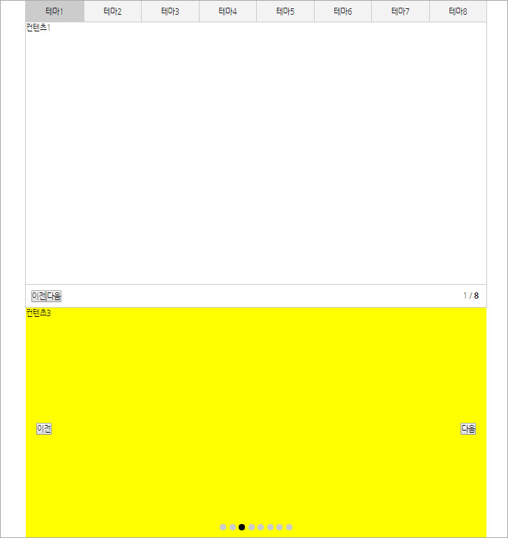
- Sub
- 각 탭과 이전/다음 버튼 클릭 시 해당하는 탭 컨텐츠 노출 및 hash값 변경, url에 hash값 추가
- hash값이 추가된 url로도 해당 탭이 노출되어야 함
- 탭의 총 갯수와 현재 탭 번호를 체크하여 텍스트로 노출
- 없는 hash값을 가진 url인 경우 무조건 첫 번째 탭 활성화
- 탭 또는 버튼 클릭 시가 아닌, hash의 변화가 일어날 때 활성화 구문 추가
- 활성화된 슬라이드의 index와 dot navigarion의 index가 동일하게 변화
- type별 노출 효과 제공(slide / fade)
- Point
- filter() : 조건을 달아서 참인 경우만 선택적으로 요소를 찾음 [▶API]
- window.location.hash : hash값 가져오기 [▶Property]
- hashchange : hash값이 변화된 상태를 확인하고 처리 [▶Event]
8. Form
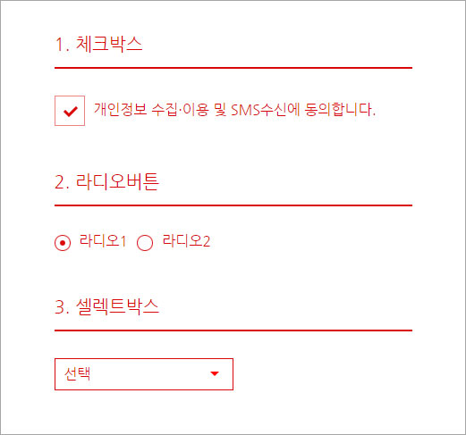
- Sub
- IE 하위 대응에도 가능하도록 active 클래스로 인터렉션 구현
- 로딩 시 시스템적으로 checked가 되어있는지 아닌지에 대한 설정 필요
- 라디오버튼의 경우 name 속성을 filtering하여 동일 값을 가진 요소만 제어
- 페이지 내에 같은 UIO가 여러개 발생하는 경우 중복 방지를 위해 플러그인화
- 일반적으로 짠 코드는 scope가 다르기 때문에, 다른 함수에서 호출할 수 없다. 따라서 객체를 window에 종속시켜 다른 함수에서도 호출이 가능하도록 한다.
- Point
- filter() : 라디오버튼의 경우 name 속성을 filtering [▶API]
- change() : form 요소를 제어할 때에는 change 이벤트를 사용한다. [▶Event]
- Prop() : checked 상태 체크 [▶API]
- triggerHandler() : 이벤트 요소에 연결된 처리기 실행 [▶Event]
- Tip
- filtering 하여 함수 실행시에는, this를 미리 _this 등으로 저장하여 사용하거나, $.proxy로 처리한다.
- attr()과 prop()은 둘 다 유사하게 속성값을 가져오지만, jQuery 1.6이상 버전에서는 attr은 문자열로, prop은 boolean으로 값을 받아온다.
- trigger()는 매치되는 모든 이벤트를 trigger하며, DOM Tree를 통해 버블링이 발생할 수 있다.
- triggerHandler()는 브라우저의 기본 동작 리스너가 일어나지 않으며, 단순히 handler 메서드만 호출한다.
- Plugin화
- 함수 호출 시 new 연산자를 사용하여 객체화하고, prototype을 상속한다.
- jQuery.extend : 추가 기능 확장이 필요할 시, jQuery.extend로 객체에 자신이 원하는 객체 혹은 함수를 추가할 수 있다. [▶API]
- 페이지 내에 같은 기능을 2군데 이상 쓸 경우 플러그인 코드를 추가하여 중복을 방지한다.
9.코드 분석
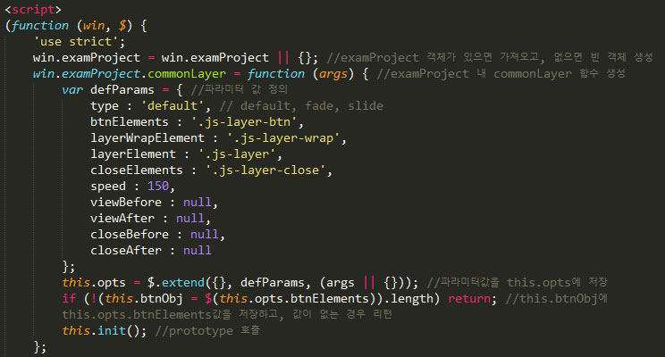
- Sub
- 레이어 팝업 js코드를 분석하고 내용을 주석으로 달기
- Point
- 팝업이 show/hide될 때 이벤트가 일어나는 시간차를 보정 (시작 setTimeout / 종료 clearTimeout)
- 타입별로 플러그인의 기능이 다른경우, 기본 객체와 타입별로 파라미터값을 가진 객체를 연결하여 사용자의 요구에 맞도록 셋팅 가능하다.
- Tip
- 객체 프로퍼티 접근 방법
- 1) 리터럴 방식(권장) - 키값/문자열 값 모두 접근 가능
- 2) 대괄호 표기 방식 - 프로퍼티 이름이 문자열인 경우만 접근 가능
- 프로퍼티가 표현식이나 예약어인 경우, 대괄호 표기법만을 사용해야 하므로 이런 경우를 키값에 포함하지 않도록 유의한다.
- Dom을 다시 그리는 경우, 재 실행되어야 하는 함수를 모아 reInit 한다.
10. Prototype
- Sub
- Javascript의 모든 객체는, 자신의 부모 역할을 하는 객체와 연결되어있고, 그리고 이것을 자신의 것처럼 상속하여 사용 가능하다. 이러한 부모 객체를 프로토타입 객체라고 한다.
- prototype에는 모든 객체에서 호출 가능한 Javascript 기본 내장 메서드가 포함되어있다. 그리고 이 객체에 포함된 다양한 메서드를 마치 자신의 프로퍼티인 것처럼 수정하여 사용할 수 있다.
한 예로, 우리가 배열에서 push()를 사용 할 수 있는 것은 기본적으로 Array.prototype에 내장되어있기 때문이다.
ex.1) console.log(Array.prototype);
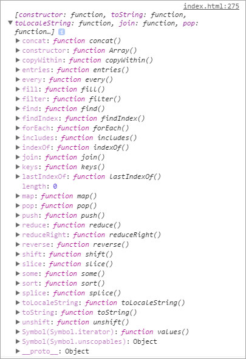
Methods
- Array.join() : 배열의 모든 요소를 문자열로 변환하여 합침
- Array.reverse() : 배열의 요소 순서를 반전 - 첫 번째가 마지막이 되고 마지막이 첫 번째가 된다.
- Array.sort() : 배열의 요소를 정렬하고 그 배열을 반환
- Array.concat() : 배열/값을 결합해 새로운 배열을 반환
- Array.slice() : 배열의 일부를 추출한 새 배열을 반환
- Array.splice() : 배열에서 요소를 추가/삭제
- Array.push() : 배열의 끝에 하나 이상의 요소를 추가하고 새로운 길이를 반환
- Array.pop() : 배열에서 마지막 요소를 삭제하고 그 요소를 반환
- Array.shift() : 배열에서 첫 번째 요소를 삭제하고 그 요소를 반환
- Array.unshift() : 배열의 앞에 하나 이상의 요소를 추가하고 새로운 길이를 반환
- Array.toString() : 배열과 요소를 반환하는 문자열을 반환 - Object.prototype.toString() 메서드를 재정의
- Array.indexOf() : 배열에서 지정한 값과 같은 요소의 첫 인덱스를 반환. 없으면 -1을 반환
- Array.lastIndexOf() : 배열에서 지정한 값과 같은 요소의 마지막 인덱스를 반환. 없으면 -1을 반환
ex.2) console.log(String.prototype);
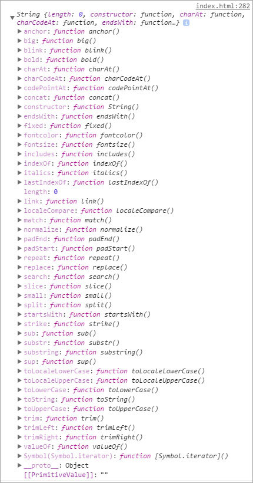
Methods
- String.prototype.replace() : 일치되는 모든 문자열을 바꾼다.
- String.prototype.slice() : string의 일부를 떼어내어 새로운 string을 만듬
- String.prototype.split() : string을 잘라서 array의 substring으로 만듬
- String.prototype.replace() : string에서 값을 찾아서 새로운 string으로 값을 바꿔준다.
- String.prototype.search() : string에서 값을 찾아서 그 위치를 리턴
- String.prototype.match() : string내에서 match되는 값을 찾아서 그 값을 리턴
- String.prototype.trim() : string의 끝부분의 whitespace를 삭제
- String.prototype.indexOf() : 특정 값이 일치하는 첫 번째 인텍스 값을 반환하며, 일치하는 값이 없을 경우에는 -1을 반환
- String.prototype.lastIndexOf() : fromIndex로부터 반대방향으로 찾기 시작하여 특정 값이 일치하는 마지막 인덱스를 반환한다. 문자열에서 일치하는 특정 값이 없으면 -1을 리턴
- Prototype 체이닝
- 특정 객체의 프로퍼티나 메서드에 접근 시, 해당 객체에 접근하고자 하는 프로퍼티 또는 메서드가 없다면 자신의 부모 역할을 하는 Prototype 객체의 프로퍼티를 차례로 검색하는데,
이것을 Prototype 체이닝이라고 한다.
아래 예시를 보면, myName에는 hasOwnProperty() 메서드가 없지만, 에러가 발생하지 않는다. 접근하고자 하는 객체에 해당 메서드가 없기 때문에, 부모인 Object.prototype을 참조했기 때문이다.
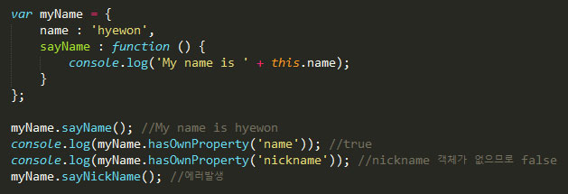